Binnenlopen
Loop binnen aan de Wagenstraat 77. Eet hier aan tafel of neem het mee naar huis.
Route en openingstijdenHongkongse keuken en bakkerij · Den Haag
Cha sieuw-broodjes, geroosterde eend, wantansoep, dim sum en elke dag een volle bakkerij. Binnenlopen, hier eten of afhalen aan de Wagenstraat 77.
Ma t/m za 11:00 tot 20:00 · zo 12:00 tot 20:00
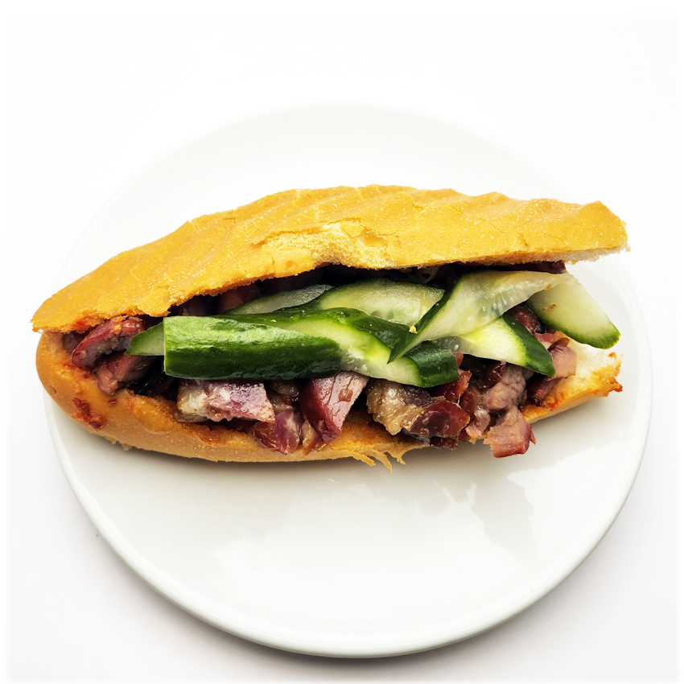
Broodje cha sieuw€ 4,95
Loop binnen aan de Wagenstraat 77. Eet hier aan tafel of neem het mee naar huis.
Route en openingstijdenWil je zeker zijn van je broodjes of gebak? Bel en leg ze apart, voordat ze uitverkocht zijn.
070 365 7228Liever thuis? St. Anny staat ook op Uber Eats: warme maaltijden tot aan je voordeur.
Zoek op "St. Anny" in de Uber Eats-app.
Hongkongse broodjes, koekjes en cake uit de vitrine. Op is op: bel gerust om iets apart te laten leggen. Prijzen hoor je in de zaak of aan de telefoon.
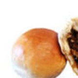
Broodje met geroosterd varkensvlees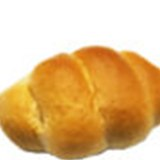
Worstenbroodje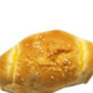
Kokosbroodje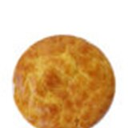
Ananasbroodje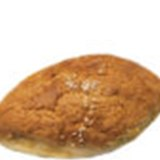
Ananasbroodje met rode bonen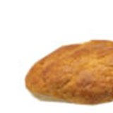
Ananasbroodje met kokos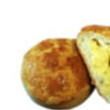
Ananasbroodje met custard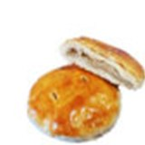
Wintermeloenkoekje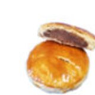
Rodebonenkoekje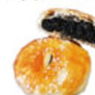
Zwarte-sesamkoekje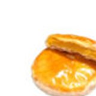
Pompoenkoekje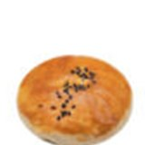
Koekje van paarse aardappelOns eten komt oorspronkelijk uit Hongkong. Dat proef je aan het cha sieuw-broodje, de geroosterde eend en de wantansoep.
Daarnaast mengen we het met favorieten van hier, zoals belegde broodjes en kip-gyoza. Zo is er elke dag iets lekkers te halen.
St. Anny · est. 1996
| Maandag | 11:00 – 20:00 |
|---|---|
| Dinsdag | 11:00 – 20:00 |
| Woensdag | 11:00 – 20:00 |
| Donderdag | 11:00 – 20:00 |
| Vrijdag | 11:00 – 20:00 |
| Zaterdag | 11:00 – 20:00 |
| Zondag | 12:00 – 20:00 |
De keuken sluit elke dag om 19:30.
St. Anny